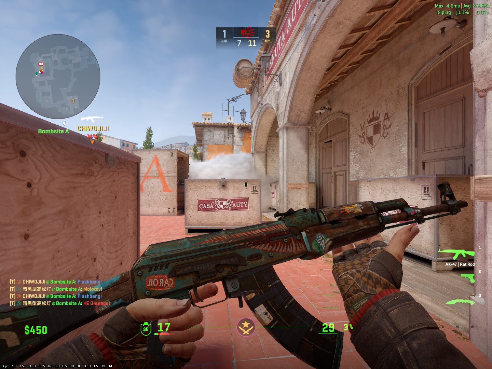
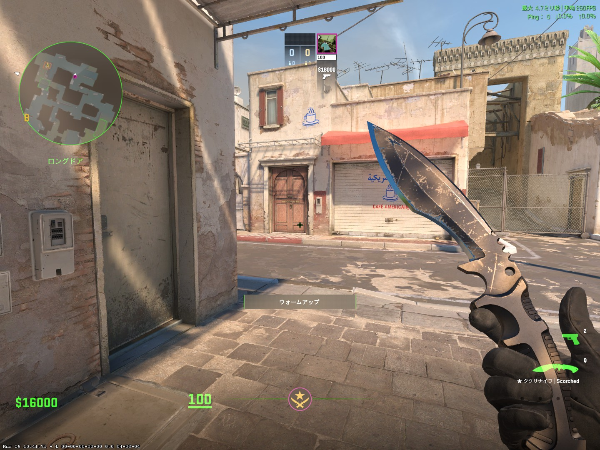
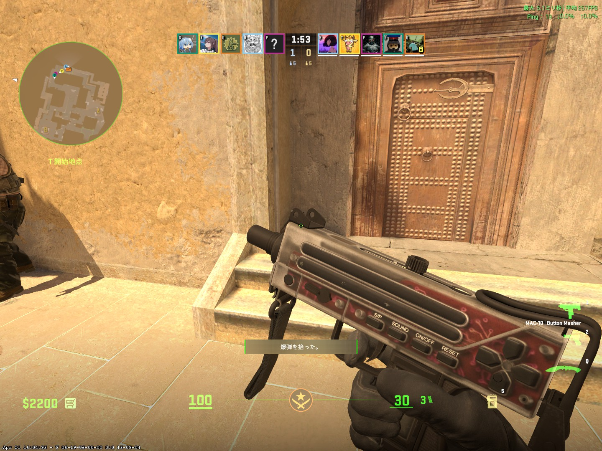

【CS2】Valorantキッズに疲れた大人へ。10年越しにハマった「プレミア」のリアルと底なしの奥深さ
公開日: 2026年6月8日 | カテゴリ: FPS / レビュー
Counter-Strikeシリーズの最新作『CS2』。実は私、前作のCS:GO時代からアカウントは持っていて、歴だけは10年以上になります。しかし、その10年間での総プレイ時間はたったの300時間。たまに起動してはデスマッチを少し回す程度の、筋金入りの「超ライト層」でした。
ところが、CS2へのアップデートを機に本格的に復帰してみたところ、見事にドハマり。今では毎日のように新ランクモード「プレミア」を回し、一喜一憂する日々を送っています。今回は、なぜここまでCS2に惹かれたのか、その魅力と「ただ撃ち合うだけではない」底なしの奥深さについて語ります。

現在地：レート15000の壁と「プレミア」の熱狂
CS2から導入された「プレミア」モードは、試合開始前のマップBANシステムと、可視化されたレート（CS Rating）が特徴です。これまでの「自分が今どれくらいの位置にいるのか分かりにくい」という不満が見事に解消されました。
現在の私のレートは15000らへんを行ったり来たりしています。勝てばレートが上がり、負ければ下がるというシビアな世界ですが、15000帯になるとプレイヤーのレベルも一段上がり、単なるエイム勝負ではなく「頭脳戦」の要素が色濃くなってきます。自分の読みとエイムが噛み合い、クラッチ（数的不利からの逆転）を決めた時の脳汁が出る感覚は、他のゲームでは絶対に味わえません。
Valorantの「キッズ」やアビリティに疲れた大人に激推ししたい
今、タクティカルFPSといえばValorantが主流ですが、もしあなたが「味方のキッズの暴言やトロールに疲れた」「複雑なアビリティの応酬についていけない」と感じているなら、CS2への移住を強くおすすめします。
純粋な撃ち合いと、落ち着いた年齢層
CS2には空を飛ぶキャラクターも、視界を完全に奪う魔法のようなスキルもありません。あるのは銃と、少しの投げ物だけ。非常にストイックで「純粋な撃ち合い」にフォーカスされています。また、歴史が長いゲームということもあり、プレイヤーの年齢層が比較的高めで落ち着いているのも、大人ゲーマーにとっては居心地が良いポイントです。
「ストッピング」と「リコイル」が織りなす職人芸
CS2の撃ち合いが他のFPSと一線を画す最大の理由は、そのシビアな射撃メカニクスにあります。
走り撃ちは厳禁！必須テクニック「ストッピング」
このゲームでは、移動しながら銃を撃っても弾は真っ直ぐ飛びません。敵を見つけたら、移動キーから指を離す（あるいは逆方向のキーを一瞬入力する）ことでキャラクターを完全に静止させる「ストッピング」という技術が絶対に必要になります。
私の環境はRyzen 7 5700XとRTX 3060 Ti、そして240Hzモニターの構成ですが、この240Hzの滑らかさが最も活きるのが、敵が飛び出してきた瞬間にピタッと止まり、初弾を頭に叩き込むこの瞬間です。
武器ごとに異なる「リコイルパターン」
さらに、フルオートで射撃した際の反動（リコイル）は、武器ごとに決まった独特のパターンを描きます。例えば定番のアサルトライフル「AK-47」なら、マウスを「下、右、左」と逆の軌道で動かして反動を抑え込む必要があります。この「職人芸」のような技術をトレモで少しずつ体に覚え込ませていく過程が、たまらなく面白いのです。
流体スモークがもたらす「戦術の革命」
CS2になって最も進化したのが「スモークグレネード」の仕様です。単なる視界の壁ではなく、空間に広がるボクセル状の「流体」として描画されるようになりました。
これにより、「スモークの中にHEグレネード（手榴弾）を投げ込んで一瞬だけ視界を開く」「スモークの端を銃で撃ち抜いて穴を開ける」といった、これまでにない戦術が可能になりました。たった1つのスモークの使い方が勝敗を大きく分ける、まさに銃を使ったチェスのような奥深さがあります。
CS2は視認性が重要なので、画面の彩度を上げるために『VibranceGUI』という外部ツールを入れている方も多いと思います。しかし私の環境では、VibranceGUIが原因でゲームの解像度がおかしくなる（固定されて変更できない）バグが発生しました。もし同じような解像度トラブルで悩んでいる方がいれば、一度VibranceGUIをオフにするか、設定を見直してみてください。
底なし沼：独自の「スキンシステム」と経済圏
そして、CS2を語る上で外せないのが「スキン（武器の見た目）」の存在です。Valorantなどのスキンと決定的に違うのは、Steamコミュニティマーケットを通じて、プレイヤー間でスキンの売買（トレード）ができるという点です。
単なるデジタルデータではなく、需要と供給によって現実の相場が変動します。私もマーケットでアイテムの売買を行っていますが、ナイフやグローブなど数十万円で取引されるアイテムもザラにあります。「自分の好きなスキンに投資し、飽きたら売って別のスキンを買う」という、現実の経済圏のような仕組みがあり、ゲームをプレイしていない時間帯でも相場をチェックしてしまうほどのめり込んでしまいます。


まとめ
10年で300時間しかプレイしていなかった私が、ここまでCS2に熱中するとは思いませんでした。アビリティに頼らない硬派な撃ち合い、職人芸のようなストッピング、流体スモークを使った戦術、そして奥深いスキン市場。
最初は覚えることが多くて大変かもしれませんが、一度「弾が当たる快感」を知ってしまえば、もう他のFPSには戻れなくなります。Valorantの混沌とした環境に少し疲れを感じている方は、ぜひ一度、CS2の「プレミア」の世界に足を踏み入れてみてください。
15000帯を維持する練習ルーティン
プレミアだけ回していても伸び悩む時期がありました。15000前後で安定するために、今は以下の3点セットを毎日30〜45分やっています。
1. Aim Map（10〜15分）
Steam Workshopの「Aim Botz Training」または「Yprac Aim Trainer」で、AK/M4の初弾＋タップ練習。240Hz環境では「静止→一発→次のボットへ」のリズムを意識します。リコイル制御は別枠で、まずストッピングと初弾精度を分離して鍛えるのが効きました。
2. デスマッチ（15〜20分）
競技マップ（Mirage/Inferno/Dust2）のDMで、AWPは使わずライフルonly。プレミア本番と同じ感度・クロスヘアで回す。勝ち負けより「毎ラウンド1キル以上＋生存意識」——KDよりK/D diffの安定を見ています。
3. デモレビュー（10分）
負けたプレミア試合のデモを1ラウンドだけ見る。自分が死んだ位置の「事前情報」と「味方の配置」を確認。15000帯はエイムより「先に情報を取る位置取り」の差が出ます。毎日1ラウンドでも、1週間で同じマップの弱点が見えてきます。
プレミア15000帯の実践Tips
| 局面 | 意識すること |
|---|---|
| マップBAN | 得意2マップ＋苦手1マップをBAN。Mirage/Infernoのような情報量の多いマップは読み合いが有利 |
| CT側 | 2-1-2配置を基本。1人だけ前に出す「情報枠」を決めておく |
| T側 | デフォルト後30秒で本格実行。ラッシュは15000帯では読まれやすい |
| エコー/フォース | 2人だけアップグレード、残りはピストル＋ユーティリティ。全員ライフルは非効率 |
| クラッチ | 時間を使う。相手の焦りを待つ方が、15000帯では勝率が上がる |
15000は「強い」というより「基礎が揃った」ラインです。ストッピングが安定し、スモーク1枚の使い方が分かり、経済管理を理解していれば到達できます。逆に、エイムだけ良くても、無謀なピークとエコー全員ライフルで15000から落ちるパターンを何度も見ました。プレミアはチェス——弾より先に、頭で勝つ練習を。